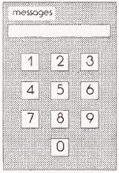

CHECK THAT NUMBER!
More and more activities are controlled by numbers every day. Now we have numeric codes to get money, to register for class, to access a phone company, to arm an alarm system, or to use a copy machine. Computers often validate these numbers. This case study describes a program that validates numbers for a copy machine.
Problem Statement
Write a program that determines whether identification numbers typed by users of a photocopier are valid, and prints appropriate messages.
The program should assume that the input consists of  one line containing (only) a four-digit identification number. For testing purposes, the program should prompt for input and print the output. Assume that the tested program, with input and output procedure calls appropriately replaced, will become the processor for a photocopier whose display panel is similar to the illustration.
The program should prompt the user for a four-digit identification number, read the number, and determine whether it is valid. Valid numbers have a correct “check digit.” The check digit for an identification number is its rightmost digit; a correct check digit is equal to the remainder of the sum of the other three digits divided by 7.
The program should print one of the following messages after verifying the number:
The number is valid. Ready to make copies.
Or
*** The number is not valid for this copy machine.
Analysis
1.1) Does the identification number 4150 have a correct check digit?
Σ Analysis
1.2) Suppose a correct check digit were determined by dividing the sum of the first three digits by 3 rather than 7. Determine a four-digit value whose check digit would be correct in either system.
Application
1.3) How does the inclusion of a check digit in the identification number help protect against illegal use of the copier? Do some research to determine if commonly used identification numbers, like credit card numbers or Social Security numbers, include a check digit.
Preparation
The reader is expected to be familiar with the heading for a Python program, variable declarations, and the print and input functions. This case study introduces the use variables of type integer and char, the division and modulo operators, assignment statements, the print function, and the if statement.